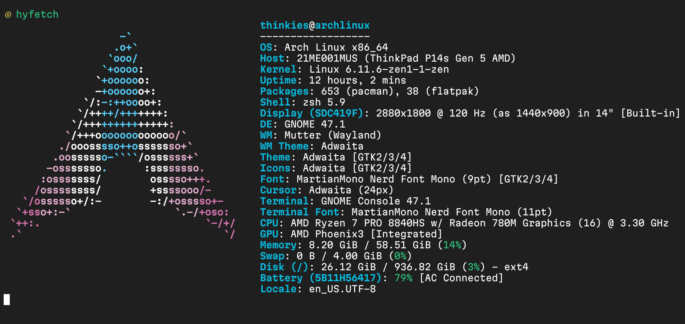

My New Thinkpad!
10/31/2024
As a celebratory first blog post, I am happy to say I have finally gotten a reliable and modern laptop computer! It is a Thinkpad P14s Gen 5 14" AMD. The specs are as follows:

This is my first time using a 120hz refresh rate monitor and it is
quite an experience! I never felt a need to go higher than 60hz, but
after using 120hz I don't think I can ever go back. The laptop runs
cool and power management is great with tlp. I was
afraid I had to install some extra drivers and wrangle with
incompatible hardware (as per my experience on my NVIDIA-based
desktop), but I every worked fine OOTB.
In terms of performance, it obviously has no trouble doing day-to-day tasks such as web browsing, word processing, and playing video. Programming and general software development is fine as well, just don't expect to be running any large deep learning models. I don't play video games, so I can't really speak to its gaming performance.